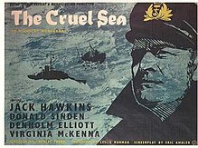
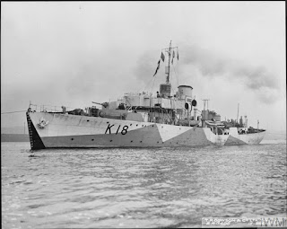

 |
| The film of The Cruel Sea -- more straightforwardly heroic, less bitter that the book? |
{kind=link}
The Cruel Sea by
Nicholas Monsarrat was one of the books that was shelved above my father’s desk
– but which, after 65 years, I’d still not read. Do you sometimes feel a
resistance to a book, a fear that it’s going be too much for you, tell you
things you don’t want to hear? It’s time to get over all that, I've decided. My father, George Jones, died aged
65. I read his final Peter Duck log
book, I feel for myself how tired he was as he faced the 1982-83 fit-out. I remember
the shock of that phone call, June 16th 1983, when pfft we were told
he was gone. He’d a heart attack and died in the Woodbridge branch of Barclays
Bank. He’d been staying with me a few days previously. We’d
had a row (about something important) but we hadn't stayed angry. He’d written a last
letter -- but he couldn’t have known it was his last.
I might live another thirty years but, now that I'm aged 65 as well, I feel as if I'm entering Extra Time. So, lucky me, I better take the chance to use it. I made an unexpected start in the autumn of 2016 when
I discovered the typescript of Naromis, my father's account of a cruise to the Baltic in August 1939, written up two years later from the far side of the
battle of the Atlantic. I also found some records of his war service and I've become increasing absorbed in trying to understand not only what happened, but how it was experienced -- and perhaps how that affected people in the longer term. The neurological manifestations of trauma are currently in the news – not only for the impact on survivors but on their children too. The group I'm interested in are people like my father who volunteered for service with the RNVR (Royal Naval Volunteer Reserve) because they loved sailing.
Nicholas Monsarrat (1910-1979) was one of them. He had spent many happy family holidays at Trearddur Bay, on the coast of Anglesey,
competing eagerly in dinghy racing, then venturing further in real yachts and learning navigation by
trial and error in August 1939 ‘the last year of innocence and love’. Monsarrat had been expensively educated (Winchester and Trinity College Cambridge) but by the later 1930s was struggling along as a novelist, journalist, pacifist. When war came he joined the ambulance service then, in the early summer of 1940, he responded to an Times advertisement for yachtsmen to join the RNVR. Six weeks later he was temporary probationary sub-lieutenant on an-almost completed corvette, HMS Campanula. By August she was officially commissioned. A few more weeks of 'working up' before her orders were received: 'Convoy duty. North Atlantic. And winter coming on.' (HM Corvette p25)
 |
| HMS Campanula, a 'Flower class' corvette |
{kind=link}
The Cruel Sea (1951) is Monsarrat's novel of the Battle of Atlantic. It was written postwar, from a diplomatic posting in South Africa. So first I read the anthology Three
Corvettes. It opens with three short non-fiction books HM Corvette (1942) , East Coast Corvette (1943) and Corvette Captain (1944) and closes with the
long short story ‘The Ship that Died of Shame’ (1952). The earlier books are autobiographical and
were written when Monsarrat was a serving officer. They were published almost as soon as they were completed
because, (he writes later), ‘I thought I was going to be killed. Basically it's an arrogant idea -- that you have something to say and must say it while you can. But the Battle of the Atlantic was like that -- death and fear at sea and then ,in harbour, the wish to tell people about it before you went out of convoy again.' (Author's foreword 1975)
Monsarrat wasn’t the only serving RNVR
officer to hurry into print during World War 2. The 22 year Ludovic Kennedy
(son of the HMS Rawalpindi hero
Captain Edward Kennedy) published his slim autobiography Sub Lieutenant in 1942. Robert Hichens, the most decorated RNVR
officer had almost completed his We
Fought Them in Gunboats when he was killed returning from a North Sea raid
in April 1943. (The book was subsequently published in 1946.) RNVR officer Peter Scott’s The Battle of the Narrow Seas was
published in 1945. It was easier for the RNVR officers to seek publication than
for their regular Royal Navy counterparts because they knew they weren’t
staying. Robert Hichens’s son records his father hesitating for a few days when diary-keeping was officially forbidden, then deciding to continue anyway. The reality
of war service and its startling responsibility prompted urgent reflection. ‘If anybody had told me on the day I joined the
Navy that within three years I would be entrusted with the sole charge of a
ship costing many thousands of pounds, and with the lives of the eighty eight
men in her, I would not only have disbelieved him – I would have voted against
it.’ (East Coast Corvette)
{kind=link}
As soon as he joined HMS Campanula Monsarrat was appointed ship’s
Correspondence Officer. He was also appointed Censoring Officer. Nothing would
leave the ship without his approval. Ashore, book, magazine, newspaper
publishers and the BBC were adhering to a censorship system managed by the Ministry of Information and (in this case) the Admiralty. Monsarrat's wartime books were part of a managed system intended to support morale. It was important to be careful as well as truthful and it's interesting to observe how he manages this. Sometimes he says what he is
not saying (for example when on an exercise with submarines) and he balances fear and privation with comradeship and humour. These books would be read
by families at home as well as by his shipmates and (potentially) the enemy. He (and other wartime writers and film makers)
produce a brand of propaganda where hardships are fully acknowledged but the
determination and will to win is never in doubt. ‘It
was going to be something to tell one’s grandchildren about, if one could catch
them in a listening mood.’ Among Monsarrat's most heartfelt pleas is that
after the war a proper account should be given of the much greater valour and endurance
shown by the Merchant Navy. He would have applauded Richard Woodman’s
passionately detailed account in The Real
Cruel Sea (2004).
There’s a moment of horror early in HM Corvette where Monsarrat describes a wreck near the mouth of the
Clyde: ‘On a nearby shoal, with her mast and one funnel showing
above water, lay a sunk destroyer, full of dead Frenchmen. Her story had been
one of the brief horrors of the war: an explosion aboard had been followed by a
fire until the ship became one vast incandescent torch. Now she lay there, a
rusty weed-washed charnel house, marked by a green wreck buoy; and many time
later as we came up the river at dusk and drew nearer that green, winking eye,
I would project my mind below the surface of the water, and try to picture the
horror’s details and what it was our anchor saw as it shattered the still water
and plunged below. Indeed I could not help this imagining which always
persisted long after we had swung and settled to our anchor: the mast
proclaimed an ugly angle in the near-darkness, the green eye accused me – ‘you
are alive’ it said: ‘and we are dead, very dead; charred, swollen abandoned –
and there are scores of us within a few hundred feet of you.’ It was the other
side of the medal, frightful in its detail, final in its implication. It was
not the RNVR: it was our introduction to war.’
{kind=link}
It's a startling passage for publication in 1942. Perhaps it was the fact that the dead sailors were French and that the disaster had not been caused by direct enemy action that sanctioned publication. After the war the sea itself became tainted for Monsarrat. As he journeyed to his new posting as a diplomat in South Africa, ‘I
could never forget that we were sailing, peacefully at last, over ground
literally strewn with dead sailors, blown up, burned to death, shredded by the
sea, sucked down, drowned – the most
awful word in a sailors word book. ‘Full fathom five thy father lies’ – the
fathers and sons were all there, just under our keel. The sea now seemed
poisoned for ever…’ (‘The Longest Love, the Longest Hate’ Observer, 1974). When writing The Cruel Sea there was no longer any reason to hold back from macabre description, from anger and disgust. The action is violent, the horrors graphic, the mood embittered. I'll never know what my father thought when he first read it. I need to think more carefully myself.
On First Looking
into Chapman's Homer
Much have I travell'd in the realms of gold,
And many goodly states and kingdoms seen;
Round many western islands have I been
Which bards in fealty to Apollo hold.
Oft of one wide expanse had I been told
That deep-browed Homer ruled as his demesne;
Yet did I never breathe its pure serene
Till I heard Chapman speak out loud and bold:
Then felt I like some watcher of the skies
When a new planet swims into his ken;
Or like stout Cortez when with eagle eyes
He star'd at the Pacific — and all his men
Look'd at each other with a wild surmise —
Silent, upon a peak in Darien.